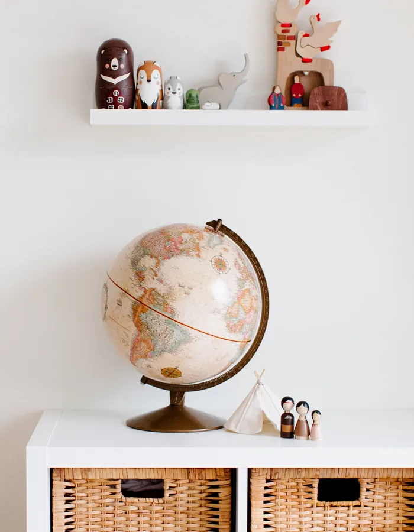

Vivir con niños significa que la casa cambia constantemente. Aparecen juguetes, libros, materiales para crear, ropa, dibujos, construcciones a medio terminar y todo tipo de objetos que forman parte de su día a día.
Intentar que todo permanezca perfectamente ordenado puede convertirse en una tarea interminable. Por eso, más que buscar una casa en la que nunca haya nada fuera de sitio, puede ser más útil crear un sistema que resulte fácil de mantener para toda la familia.
Organizar una casa con niños no consiste en esconderlo todo. Se trata de encontrar un equilibrio entre tener las cosas accesibles, aprovechar bien el espacio y facilitar que cada objeto pueda volver a su sitio.
Y no hace falta tener una casa grande ni disponer de una habitación exclusiva para conseguirlo.
Antes de comprar cajas, estanterías o muebles nuevos, conviene observar qué ocurre en casa durante unos días.
¿Dónde juega normalmente el niño?
¿Dónde suele leer?
¿Dónde hace manualidades?
¿Dónde termina dejando sus cosas?
¿Hay algún rincón que se utiliza mucho y otro que prácticamente nunca se utiliza?
A veces intentamos organizar una habitación según cómo creemos que debería utilizarse, cuando en realidad la forma más práctica de organizarla es partir de cómo se utiliza de verdad.
Si el niño suele jugar en el salón, quizá tenga más sentido crear allí un pequeño espacio para sus cosas que intentar conseguir que todo el juego se traslade a otra habitación.
La organización debería adaptarse a la vida familiar y no al contrario.
Cuando todo está accesible al mismo tiempo, puede resultar más difícil encontrar algo concreto y el espacio puede terminar transmitiendo una sensación de desorden constante.
Esto no significa que haya que guardar todo.
Una buena opción puede ser combinar:
La clave está en decidir qué merece estar al alcance y qué no necesita ocupar espacio visible permanentemente.
No hace falta disponer de una habitación enorme para crear diferentes zonas.
Una misma habitación puede tener:
Incluso en una habitación pequeña, diferenciar visualmente las actividades puede ayudar a que el espacio resulte más fácil de utilizar.
No es necesario que cada zona tenga un mueble específico.
A veces basta con una estantería, una mesa, una alfombra o un pequeño espacio claramente delimitado.
Una de las formas más sencillas de mejorar la organización es colocar lo que más se utiliza en los lugares más accesibles.
Por ejemplo:
Los libros que consulta habitualmente pueden estar a su alcance.
Los materiales de dibujo que utiliza con frecuencia pueden encontrarse en un recipiente fácil de abrir.
Los productos que requieren supervisión pueden guardarse en un lugar reservado para los adultos.
Y aquello que utiliza solo de vez en cuando puede almacenarse en una zona menos accesible.
No se trata de crear un sistema perfecto, sino de reducir los pasos necesarios para sacar algo y volver a guardarlo.
Una caja enorme en la que acaba todo puede parecer una solución rápida, pero con el tiempo puede hacer que encontrar cualquier cosa resulte más difícil.
No siempre hace falta clasificar cada objeto individualmente.
Puede ser suficiente con crear categorías sencillas:
La clasificación debe ser lo bastante sencilla como para que toda la familia pueda entenderla.
Si guardar algo requiere demasiado esfuerzo, probablemente el sistema no sea sostenible.
Un sistema de organización puede ser muy bonito y, sin embargo, poco práctico si el niño no puede utilizarlo.
Cuando sea apropiado y seguro, los objetos que utiliza de forma habitual pueden situarse a una altura que le permita acceder a ellos.
Esto puede facilitar que:
La autonomía no depende únicamente de enseñar al niño a recoger. También depende de que el entorno le permita hacerlo.
Cuando una casa se queda pequeña, la primera reacción suele ser buscar más espacio para guardar cosas.
Pero a veces la solución no consiste en añadir más almacenamiento.
Si cada vez tenemos más cajas, cajones y estanterías, también podemos terminar acumulando más objetos.
Por eso puede ser interesante revisar periódicamente qué se utiliza realmente.
Pregúntate:
Crear espacio también puede significar tener menos cosas que organizar.
No es necesario que todos los juguetes estén disponibles al mismo tiempo.
Una posibilidad es guardar temporalmente parte de ellos y volver a incorporarlos más adelante.
Esto puede ser útil cuando:
La rotación no tiene que seguir un calendario rígido.
Puede consistir simplemente en guardar durante un tiempo algunas cosas que apenas se utilizan y volver a sacarlas más adelante.
Lo importante es que no se convierta en otra tarea complicada para los adultos.
Cuando el suelo disponible es limitado, las paredes pueden ofrecer posibilidades adicionales de organización.
Estanterías, baldas o soluciones verticales pueden ayudar a aprovechar mejor el espacio.
Eso sí, cualquier elemento de almacenamiento debe instalarse y utilizarse siguiendo las recomendaciones de seguridad correspondientes, especialmente en habitaciones infantiles.
También conviene pensar en la accesibilidad: lo que está a una altura elevada puede ser adecuado para almacenamiento adulto, pero no necesariamente para objetos que el niño necesita utilizar por sí mismo.
A veces las imágenes de habitaciones infantiles perfectamente decoradas generan expectativas poco realistas.
En una casa donde viven niños habrá dibujos, construcciones, libros abiertos, objetos en uso y momentos de desorden.
El objetivo de organizar no debería ser conseguir que la habitación parezca siempre una fotografía.
Una buena organización es aquella que funciona cuando la familia está viviendo en ella.
Si el sistema permite recoger con relativa facilidad después de jugar, probablemente sea mucho más útil que una habitación impecable que necesita demasiado esfuerzo para mantenerse así.
Los libros también necesitan un lugar pensado para su uso.
Si están escondidos en cajas o colocados en lugares difíciles de alcanzar, pueden terminar utilizándose menos.
Puede resultar útil mantener visibles y accesibles aquellos libros que el niño consulta habitualmente.
También puedes crear un pequeño rincón de lectura, aunque sea simplemente:
No hace falta crear una biblioteca infantil completa.
Un pequeño espacio que invite a coger un libro puede ser suficiente.
Pinturas, lápices, rotuladores, papeles, pegamento y otros materiales pueden multiplicarse rápidamente.
Una forma práctica de organizarlos es agruparlos por tipo y mantener los más utilizados en recipientes fáciles de identificar.
Por ejemplo:
No hace falta clasificar cada lápiz o cada hoja.
El objetivo es que el niño y los adultos sepan dónde buscar y dónde devolver cada cosa.
En materiales que requieran supervisión o que no sean adecuados para determinadas edades, deben seguirse siempre las indicaciones correspondientes.
Hay algo que suele generar mucho desorden: los proyectos que todavía no han terminado.
Una construcción, un dibujo, una manualidad o cualquier otra actividad puede necesitar permanecer unos días sin desmontarse.
Si todo tiene que recogerse inmediatamente, algunos proyectos no pueden continuar al día siguiente.
Puede ser útil reservar un pequeño espacio para:
"Lo estamos haciendo".
Puede ser una bandeja, una mesa, una caja o una zona concreta.
De esta forma, el proyecto puede mantenerse temporalmente sin ocupar toda la casa.
Cuanto más complejo es un sistema de organización, más difícil suele resultar mantenerlo.
No necesitas veinte categorías diferentes.
No necesitas etiquetas para absolutamente todo.
No necesitas reorganizar la habitación cada semana.
Un sistema sencillo suele funcionar mejor:
una cosa → un lugar.
Si todo el mundo sabe dónde guardar algo, recoger resulta mucho más fácil.
Y si una categoría empieza a desbordarse constantemente, quizá sea una señal de que necesita revisarse.
Recoger no tiene por qué convertirse en una gran tarea al final del día.
Puede resultar más sencillo incorporar pequeños momentos:
Cuando el espacio está pensado para que recoger resulte sencillo, estas pequeñas acciones pueden integrarse mejor en la rutina.
El objetivo no debería ser que el niño mantenga todo perfectamente ordenado, sino que poco a poco pueda participar en el cuidado de sus espacios y pertenencias.
Las necesidades cambian con el tiempo.
Algo que era muy utilizado hace unos meses puede haber dejado de interesar.
También pueden aparecer productos que ya no corresponden a la etapa actual o materiales que se han quedado pequeños, incompletos o deteriorados.
Si quieres orientarte sobre qué puede tener sentido en cada etapa, puedes consultar nuestras páginas por edades.
Una revisión periódica permite detectar:
No hace falta hacerlo constantemente.
Unas pocas revisiones a lo largo del año pueden ser suficientes.
No tener una habitación infantil grande no significa que no puedas crear un espacio funcional.
En viviendas pequeñas puede ser especialmente útil:
Una esquina del salón, una parte de una estantería o un pequeño espacio bajo una mesa pueden convertirse en zonas de actividad.
Los productos plegables o fáciles de recoger pueden resultar prácticos cuando el mismo espacio tiene diferentes funciones.
No todo tiene que estar disponible al mismo tiempo.
Cuando el suelo es limitado, aprovechar las paredes puede liberar espacio.
Antes de incorporar algo nuevo, comprobar si ya existe otra cosa que cumple una función parecida.
La organización no empieza cuando ya tenemos demasiadas cosas.
Empieza antes.
Cada nueva compra ocupa espacio físico, requiere algún tipo de mantenimiento y, en muchos casos, tendrá que almacenarse durante años.
Por eso, una buena organización del hogar también está relacionada con comprar de manera consciente.
Antes de incorporar algo nuevo, puedes preguntarte:
¿Tenemos espacio para ello?
¿Dónde lo vamos a guardar?
¿Tenemos ya algo parecido?
¿Lo vamos a utilizar realmente?
¿Aporta algo diferente?
Esta forma de pensar puede evitar que el problema del almacenamiento crezca continuamente.
Quizá esta sea la idea más importante.
El objetivo de organizar una casa con niños no debería ser eliminar todo rastro de actividad.
Una casa en la que se juega, se lee, se dibuja, se construye y se experimenta va a tener momentos de desorden.
Y eso forma parte de vivirla.
La organización sirve para que, después de esos momentos, sea posible volver a colocar las cosas en su sitio sin convertir la recogida en una tarea interminable.
No se trata de conseguir una casa perfecta. Se trata de conseguir una casa que funcione para quienes viven en ella.
Organizar una casa con niños no consiste en encontrar el sistema de almacenamiento perfecto.
Consiste en observar cómo utiliza la familia el espacio, decidir qué necesita estar accesible, reducir lo que no se utiliza y crear lugares sencillos para cada cosa.
Puede ayudar:
Porque cuando una casa está organizada pensando en cómo vive realmente la familia, el objetivo deja de ser mantenerlo todo perfecto y pasa a ser algo mucho más útil:
hacer que el día a día resulte un poco más sencillo.